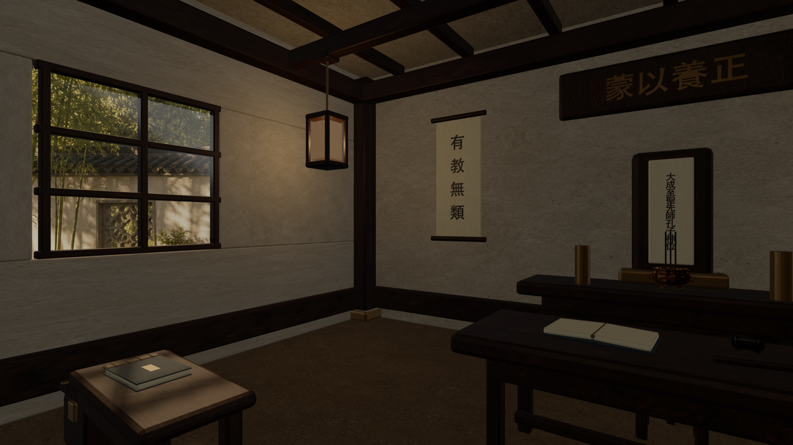
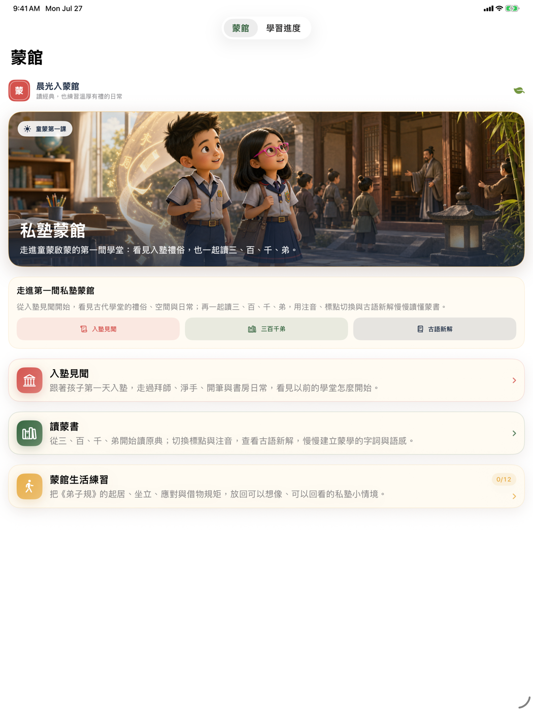
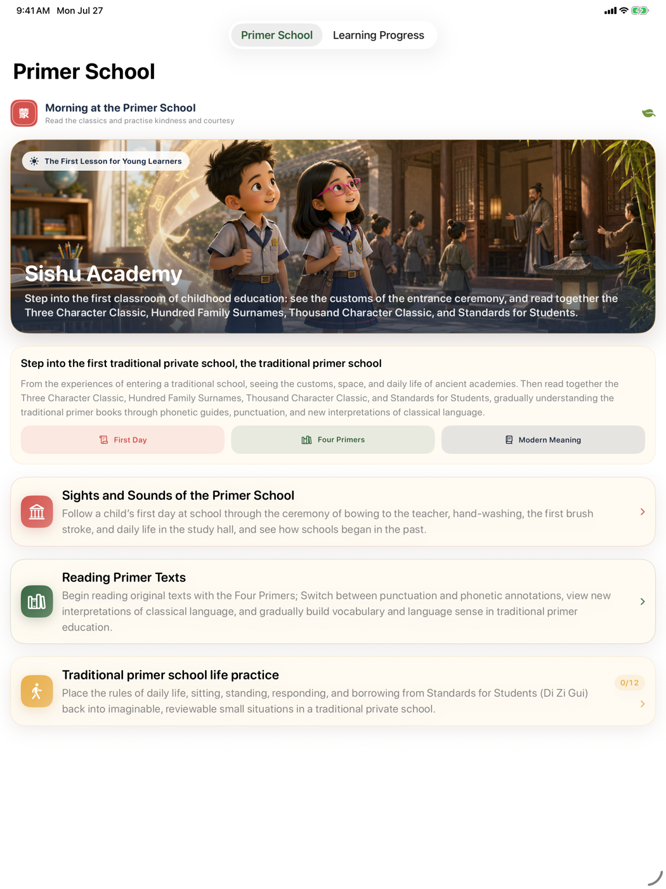

把同一套蒙館設計語言，從螢幕延伸到空間。
私塾蒙館用現代閱讀方式重新打開《三字經》《百家姓》《千字文》與《弟子規》。1.1 讓紙墨、竹青與朱砂語彙貫穿整個 App，並在 Apple Vision Pro 新增一座可以真正走進去閱讀的沉浸式蒙館。

- 可用裝置
- iPhone / iPad / Apple Vision Pro
- 下載方式
- 付費下載
1.1 讓不同畫面說同一種設計語言
這次改版從 App 圖示延伸出完整的視覺系統：紙張作為安靜的閱讀底色、竹青標示閱讀行動與進度、朱砂則用在蒙館入口與重要提示。新的啟動畫面、首頁、四書入口、篇章閱讀與學習進度不再像分開製作的功能，而是同一座數位蒙館的不同房間。
選書和閱讀器流程也一起整理。讀者可以更直接地進入四部蒙書、跳到想讀的篇章，並在原文、今解與情境之間保持清楚的位置感。

四部蒙書，259 段可以慢慢讀
內容收錄《三字經》《百家姓》《千字文》與《弟子規》共 259 段。每一段都把古文原典放在中心，再補上標點版、今解、情境與字詞提示；讀者可以依興趣跳讀，不必被迫沿著單一路線完成整部書。
最大亮點：完整沉浸式蒙館
visionOS 1.1 不只是把平面閱讀視窗放進空間。戴上 Apple Vision Pro 後，使用者會站在完整 360° 蒙館教室中央，周圍有木構屋架、書案、書冊、門扇、燈具、香爐與文房器物；自然光從透明窗戶進入，窗外則是竹與柳構成的中式庭園。
閱讀不需要離開這座蒙館。原生閱讀器可以自由開啟、關閉與移動，頂端的四書選擇器能直接切換《三字經》《百家姓》《千字文》與《弟子規》，再查看原文、今解、情境或啟動朗讀。
從蒙館中央環視木構室內，感受窗外竹柳庭園與自然光影。
在沉浸空間內叫出可移動的閱讀器，不必回到一般視窗。
直接切換四部蒙書、篇章與閱讀層次，讓場景與文本留在一起。
先從「入塾第一日」理解蒙館
除了經典閱讀，App 也以孩子第一次進入蒙館為線索，介紹拜師、淨手、開筆、師生互動、讀書方式與日常規矩。故事採取考據加想像的方式：尊重歷史常理，同時讓今天的孩子與一般讀者有一條可以走進去的路。
安靜、本機、不需要帳號
閱讀進度、已讀狀態、書籤與顯示偏好保存在裝置上。App 不需要註冊帳號，也不會透過開發者營運的伺服器蒐集閱讀紀錄。沉浸式蒙館、篇章內容與朗讀都以裝置和系統能力運作。
私塾蒙館 iOS 1.1 與 visionOS 1.1 都已上架。可以在 iPhone 或 iPad 安靜讀一段，也可以戴上 Apple Vision Pro，真的走進一座蒙館再打開書。
Carry one primer-school design language from screen into space.
Sishu Mengguan uses a modern reader to reopen the Three Character Classic, Hundred Family Surnames, Thousand Character Classic, and Standards for Students. Version 1.1 unifies the app around paper, bamboo green, and seal red—and adds a primer school that readers can actually enter on Apple Vision Pro.
- Devices
- iPhone / iPad / Apple Vision Pro
- Download
- Paid download
Version 1.1 gives every screen the same design language
The redesign grows outward from the app icon: paper becomes a calm reading surface, bamboo green marks reading actions and progress, and seal red identifies the school entrance and important moments. A new launch screen, home, four-book library, passage reader, and progress views now feel like different rooms in the same digital school.
Book selection and reader navigation were refined at the same time. Readers can move directly into any of the four primers, jump to a passage, and keep a clearer sense of place across original text, explanation, and context.

Four primers and 259 passages to read at your own pace
The collection includes 259 passages from the Three Character Classic, Hundred Family Surnames, Thousand Character Classic, and Standards for Students. Each passage keeps the Classical Chinese text at its center, with punctuation, a modern explanation, context, and helpful notes close by. Readers can begin wherever curiosity leads instead of following one forced route.
The highlight: a fully immersive primer school
visionOS 1.1 does more than place a flat reader in space. On Apple Vision Pro, readers stand at the center of a complete 360° classroom with timber framing, desks, books, doors, lamps, an incense burner, and writing tools. Natural light enters through transparent windows facing a Chinese garden of bamboo and willow.
Reading stays inside the school. The native reader can be opened, closed, and moved at any time. A four-book selector jumps directly among the classics, while the reader keeps original text, explanation, context, and read-aloud within reach.
Stand inside the timber interior and look toward its bamboo-and-willow garden.
Bring up a movable reader without leaving the immersive environment.
Switch books, passages, and reading layers while keeping text and place together.
Begin with a first day at school
Beyond the classics, an illustrated first-day story introduces teacher ceremonies, hand washing, the first brush stroke, teacher-student relationships, reading methods, and everyday rules. It combines historical grounding with narrative imagination, giving children and general readers a path into a world that might otherwise feel distant.
Calm, local, and account-free
Reading progress, read state, bookmarks, and display preferences remain on the device. No account is required, and reading history is not collected through developer-operated servers. The immersive school, bundled passages, and audio use the device and operating-system environment.
Sishu Mengguan iOS 1.1 and visionOS 1.1 are now available. Read a quiet passage on iPhone or iPad, or put on Apple Vision Pro and step inside the school before opening a book.